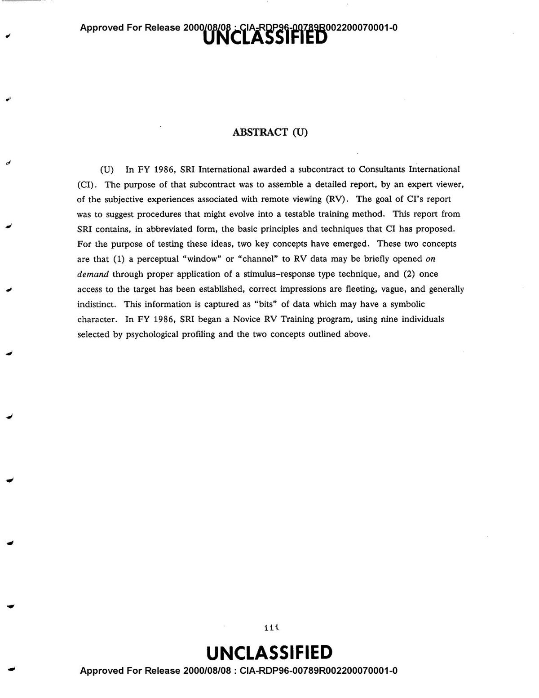
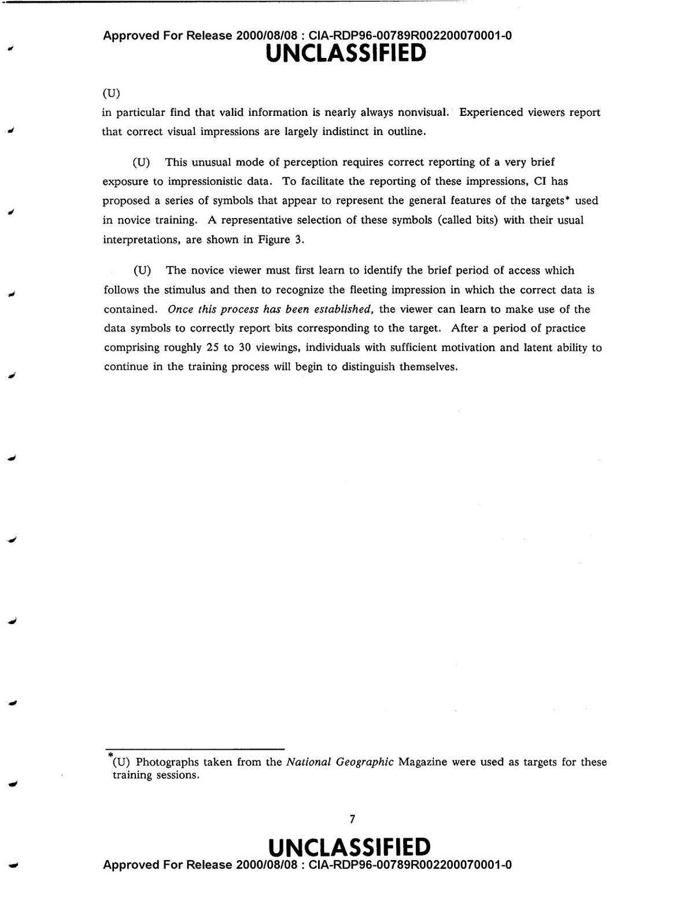
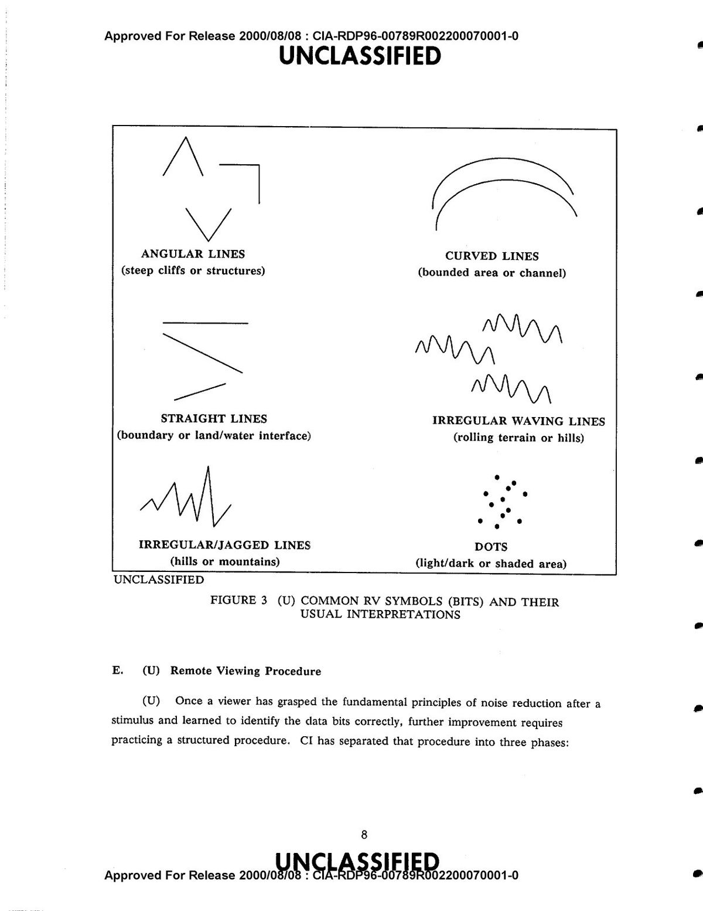

CIA-RDP96-00789R002200070001-0 · SRI INTERNATIONAL · DECEMBER 1986 · ORIGINALLY CLASSIFIED SECRET
THE CIA PROTOCOL IS BUILT AROUND ONE INSIGHT: CORRECT IMPRESSIONS ARRIVE IN UNDER HALF A SECOND
Most people who talk about Project STARGATE know two things: the CIA spent a lot of money on it, and it got shut down. What they don't know is that before it got shut down, the researchers wrote down exactly what they learned about how to train remote viewing. In detail. With numbered steps.
That document is real, it's public, and almost nobody has actually read it.
In December 1986, SRI International delivered an 86-page SECRET-classified report to the US Army called A Suggested Remote Viewing Training Procedure. The authors were G. Scott Hubbard of SRI and Gary Langford, a contractor who had spent 13 years developing RV technique for government clients. This wasn't a summary of what they hoped might work. It was a training manual, written for researchers who needed to actually replicate results.
It was declassified in 2000. It's been sitting in the CIA's FOIA reading room ever since. We pulled the full text, read it carefully, and analyzed what it actually says. Some of it confirms things the RV community has known for years. Some of it is genuinely surprising. And a few parts directly contradict how most people approach training today.
Intel Briefings
Get analysis of declassified research and new training insights. No noise.
What This Document Actually Is
Document identifier: CIA-RDP96-00789R002200070001-0
This was a deliverable on a US Army research contract (DAMD 17-85-C-5130). Not a speculative paper. Not a grant proposal. The Army paid for it, SRI delivered it, and it was classified SECRET on arrival.
Gary Langford, who wrote the core methodology sections, is an interesting figure. He founded Consultants International in 1979 specifically to apply remote viewing to problems that couldn't be solved any other way. By the time he wrote this document his clients included five government organizations, four industrial corporations, and several private individuals. He describes 13 years of direct experimentation. This report is, in his own words, "the first full published report on remote viewing methodology" from his organization.
That matters because this isn't theoretical. Langford is writing down what he observed over hundreds of sessions, with the explicit goal of teaching it to people who had never done it before.

ABSTRACT — PAGE 3 · THE DOCUMENT INTRODUCES TWO KEY CONCEPTS: "TARGETING" AND "BIT-GRABBING"
Finding 1: The Three-Step Protocol
The first thing that stands out when you actually read this document is how concrete it is. There's no vague talk about opening your mind or trusting your intuition. There's a numbered procedure with specific steps, specific timing, and specific things to watch out for. It reads more like a pilot's checklist than anything you'd find in a new age bookstore.
Every session follows three steps, in order, always:
Open a brief perceptual channel to the target. The key word ("TARGET") is spoken. The viewer captures only the first impression — nothing else.
Immediately record the impression in writing: shapes, symbols, words, feelings. Speed is critical. The impression lasts less than half a second.
Separate the raw signal from interpretation. Label what's target data vs. imagination. Describe dimensions: color, texture, motion, function, emotion.
Novices spend almost all their time on Step 1, just trying to get access. Expert viewers spend nearly 100% of their time on Step 3, qualifying and interpreting data they can now access reliably. The difference between a novice and an expert isn't raw ability. It's processing efficiency.
Finding 2: The Half-Second Window
This is the part of the document that stopped me cold. The researchers are very specific about timing:
The whole methodology flows from this one observation. Correct impressions arrive in under half a second. Everything that comes after that (the second thought, the elaboration, the thing that feels vivid and convincing) is mostly your imagination backfilling.
So the training isn't really about developing a new ability. It's about learning to catch and record something that happens extremely fast, before your analytical brain gets involved and makes it look like something familiar.
Curious where you'd score? Try 3 free AI-scored CRV sessions and see how your signal compares to the CIA's published baselines.

ACCESS METHODOLOGY · APPENDIX A · THE DOCUMENT DESCRIBES THE PERCEPTUAL "WINDOW" TO RV DATA
Finding 3: Interpretive Overlay: The #1 Failure Mode
The document has a term for the thing that trips up almost every beginner: Interpretive Overlay, or IO — what the later CRV protocol would call Analytical Overlay (AOL). It's probably the most useful concept in the whole manual.
Here's what IO is: you get a genuine first impression, something faint and half-formed, and your brain immediately replaces it with something that makes sense. You feel something angular and your mind says "building." You sense something vast and it becomes "ocean." The IO is vivid, confident, and feels completely real. The actual signal was faint, brief, and easy to dismiss.
This is why beginners often feel like they're doing great but score poorly. The thing that feels most like a perception is usually the thing they invented.
The CIA's data on IO frequency by experience level is striking:
The good news from the CIA's data: IO isn't a sign you're doing it wrong. At the novice level it's described as "commonplace but not objectionable." You're supposed to have it. The training is specifically designed to help you recognize it, label it as IO, and separate it from real signal. Experts don't eliminate IO entirely. They just get much better at knowing when it's happening.
Want to see IO in action on your own responses? Psionic Assist scores each dimension and gives you AI feedback on exactly where your impressions matched and where they diverged.
Finding 4: The Quantified Training Curve
Appendix B is where the document gets unexpectedly rigorous. It reads less like a government report and more like a learning science paper. The researchers tracked performance as a function of practice volume, session frequency, time between sessions, and type of feedback. They graphed it. For 1986, this is surprisingly data-driven.

REMOTE VIEWING PROCEDURE · THE STEP-BY-STEP PROTOCOL USED IN CIA TRAINING SESSIONS
The key quantified findings from Appendix B:
Worth noting: going over 4 sessions per day actually makes things worse. The curve inverts. Most people's instinct when they're getting into something is to practice as much as possible. The CIA's data says that's counterproductive.
The most effective single reinforcement technique they found: always end the session on a successful result. "Always stopping on a win seems to tell the novice that they have performed as expected, and they should internalize this 'win' experience so they can repeat the success." This is standard sports psychology, applied to psychic training in 1986.
Finding 5: The Noise Reduction Technique
Step 1 of the actual protocol caught me off guard. Before you do anything else:
It sounds almost too simple to matter. But the theoretical model here is that whatever's on your mind (work, stress, a conversation you're replaying) generates mental noise that competes directly with RV signal. Writing it down and throwing the paper away isn't ceremonial. It's a deliberate clearing step. The physical act of discarding it apparently helps the brain let it go.
The document also explains why the word "TARGET" is used as a trigger. It's a conditioned stimulus — trained through repetition until it reliably opens the perceptual window on demand. This is basic behaviorism applied to something the behaviourists would have laughed at.

NOVICE TRAINING DATA · APPENDIX B · PERFORMANCE AS A FUNCTION OF PRACTICE AND REINFORCEMENT
Finding 6: Bits, Ideograms, and Symbolic Language
The document uses specific terminology that's worth understanding because it clarifies something that trips people up in remote viewing: what exactly are you supposed to be writing down?
A bit is the smallest unit of RV perception — a single, primitive impression. Not a full image. Not a description. Something more basic: a shape, a texture, a feeling, a spatial relationship. Bits aren't visual in the way a photograph is visual. They're more like the idea of something rather than the thing itself.
Multiple bits combine into ideograms, which are symbolic sketches the viewer puts on paper. What's interesting is that experienced viewers develop a personal symbolic vocabulary over time. Certain ideograms start to reliably correspond to certain types of targets. That vocabulary isn't taught. It builds through accumulated sessions and feedback. You can't get there without the reps.
What This Means for Training Today
The 1986 protocol was built around in-person sessions with a monitor, paper, and physical sealed envelopes. Obviously that's not how most people are going to train. But the underlying mechanics translate almost perfectly to digital training — and honestly, in a few specific ways, digital is actually better suited to the methodology than the original format. (For a comparison of how current remote viewing training tools stack up against these requirements, see our buyer's guide.)
The original protocol used numerical coordinates to designate targets without revealing them. This is exactly how Psionic Assist works — you receive a coordinate, nothing else.
The CIA found feedback is "crucial in reinforcing correct perceptions." AI scoring after each session provides the precise reinforcement signal the protocol requires.
The CIA's Qualify step explicitly lists 15 dimensions to describe: color, motion, shape, texture, function, age, orientation, emotion, time, use, weather, lighting, terrain, cultural aspects, sounds.
The document emphasizes tracking performance over time to observe improvement. Score trend, dimension averages, and session history serve this function directly.
The CIA's data: 1–4 sessions per day optimal, 2–4 days between training blocks. The streak system and session limit are not arbitrary — they match the protocol exactly.
"Repetition of the same type of targets... can lead to a degrading of the functioning." The target library uses 75 diverse targets across 9 categories for this reason.
The One Thing the CIA Got Wrong
To their credit, the authors are completely upfront about this: the methodology was "arrived at almost entirely through personal observation, introspection and informal experimentation." They say it repeatedly. Almost none of the concepts had been rigorously tested at the time of writing.
The 1986 training program had nine subjects. Nine. The results were called "suggestive evidence," which is scientist-speak for "promising but not conclusive." A follow-on rigorous test was apparently planned. Whether it happened, and what it found, isn't in this document.
The problem was scale. Nine people can't give you a statistically reliable picture of how a skill develops. You need thousands of sessions, all scored the same way, to see real patterns emerge.
That's actually what's being built now. Every session scored by the same AI rubric, across a growing number of users, is generating the kind of training data the 1986 researchers couldn't get. Whether the patterns match what they predicted is something we'll be publishing as the dataset grows.
Curious where you'd start on that curve? Your first three sessions are free with no account required.
Read the Document Yourself
Don't take our word for any of this. The full document is publicly available — CIA document ID CIA-RDP96-00789R002200070001-0. The Internet Archive version has an OCR text layer that makes it searchable:
archive.org/details/CIA-RDP96-00789R002200070001-0 →
Appendix A (the actual training methodology) and Appendix B (the performance data) are the parts worth reading. The main body is a summary of both. Start there if you want the short version.
We'll be doing more of this kind of analysis. There are 89,000+ pages of declassified STARGATE documents. Most of them have never been read by anyone outside a government archive. Some of them contain things that will surprise you.
Train the Protocol
Psionic Assist uses the same three-step structure described in this document: coordinate target, record your impressions, scored feedback. It's the closest thing to the CIA training methodology that's available to the public. First three sessions are free, no account required to start.
Use code CIA1986 at checkout for 20% off your subscription.
Begin Training →